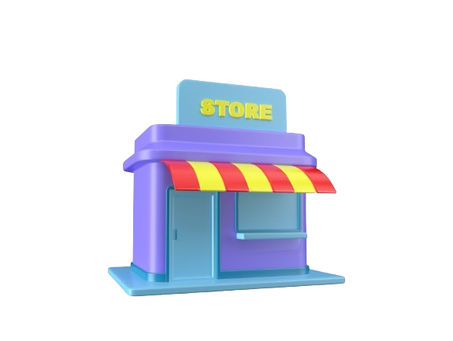

 My first working experience was, as a cashier at TF Value Mart Kuala Lipis for six months. During my time working as a cashier, I honed my multitasking skills, provided exceptional customer service, and developed a keen attention to detail, gaining valuable insights into the fast-paced and dynamic world of retail while fostering a sense of responsibility and professionalism.
Next, I did my industrial training at Pejabat Cawangan Tabung Haji Kuala Lipis for four months. Engaging in industrial training was a pivotal chapter in my professional development, where I applied theoretical knowledge to real-world scenarios, collaborated with industry experts, and gained hands-on experience, solidifying my understanding of practical aspects within my field and fostering a strong foundation for my future career.